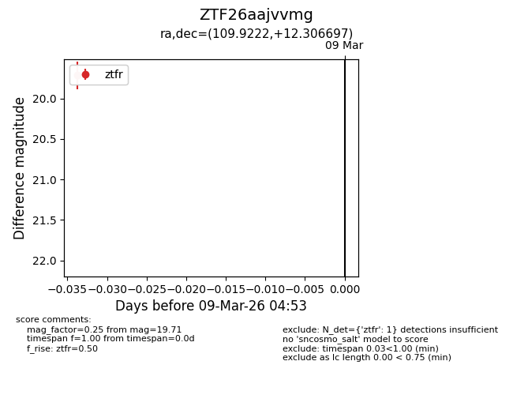
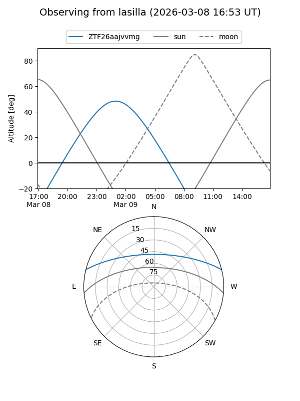
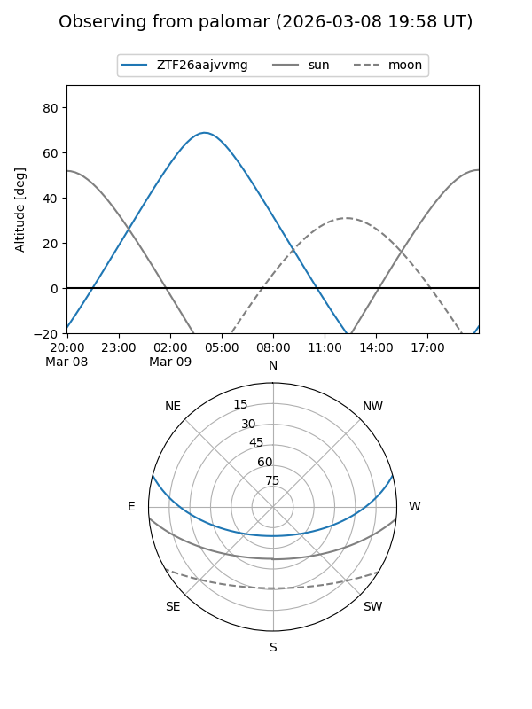

ZTF26aajvvmg
Target ZTF26aajvvmg at 2026-03-09 04:54
Aliases and brokers:
FINK: link
Lasair: link
ALeRCE: link
alt names
ZTF26aajvvmg (ztf,fink_ztf)
Coordinates:
equatorial (ra, dec) = 109.9222,+12.30670
equatorial (HMS+DMS) = 07:19:41.32,+12:18:24.11
galactic (l, b) = (205.0102,+11.77707)
Flags:
Photometry:
last ztfr=19.71
1 ztfr detections
Lightcurve

Visibility


Additional plots